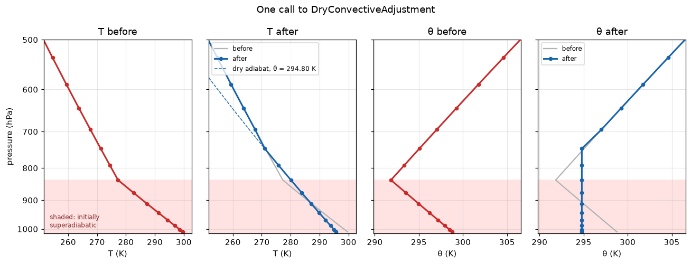

Dry convection
Chapter 11 of the notes. Page 9 ended on a column with a layer in which θ fell with height, and nothing in that column’s stack could remove it. This page introduces the component that does: DryConvectiveAdjustment.
Pages 7, 8 and 9 each stepped a column for weeks and read off where it settled. This page has no time loop. Whether a column is statically stable is a property of its profile at one instant, so the page prescribes an unstable profile, calls the scheme once, and compares the two profiles. A convergence history would add nothing but noise. Every cell here runs in well under a second.
An unstable column
Twenty-eight levels, dry, with a temperature that falls at 14 K km⁻¹ through the lowest eight layers and at 6.5 K km⁻¹ above them. Below 200 K the profile is held at 200 K, a crude stratosphere.
A constant lapse rate Γ has an exact form in pressure. Hydrostatic balance and the ideal gas law give dT/dp = RΓT/(gp), and that integrates to
\[ T(p) = T_s \left(\frac{p}{p_s}\right)^{R_d\Gamma/g}. \]
The cell builds the profile that way, so each Γ is the lapse rate the column really has, and there is no height coordinate to get wrong.
The dry adiabatic lapse rate is g/c_p = 9.76 K km⁻¹, and the lowest eight layers cool faster than that. Their θ falls with height, from 298.78 K at the lowest level to 291.83 K at 836 hPa. Above that, θ rises again. A parcel nudged upward from the lowest level keeps its θ, arrives among air with a lower θ, and is lighter than that air, so it keeps rising.
One call

This is the figure the cell above produces. Live cells need WebAssembly; if your browser blocks it, the static version is here.
The θ panels carry the lesson. Before the call, θ fell with height through the shaded layers. After it, the lowest ten layers share one θ, 294.80 K, and the spread across them is about 6 × 10⁻¹⁴ K, which is rounding error. The adjusted layer is neutral: a parcel moved anywhere within it finds air of its own θ, and has no reason to keep going. Above it, θ still rises with height, and the air is stable.
In temperature, the same change looks less tidy. The lowest level cools by 3.99 K, and the layers near 840 hPa warm by up to 2.82 K. The lowest air has given heat to the air above it, which is what convection does. The adjusted profile falls at exactly the dry adiabatic lapse rate, along the dashed line.
Ten layers were adjusted, not eight: the mixing reached into the stable air above the unstable layers. The scheme works down the column from the top. Starting at each level, it looks upward and mixes up to the highest level whose θ is below the plain average of θ from the starting level up to and including it. Level 6 mixes with level 7 first. Each level from 5 down to 1 then mixes everything up to level 8. Last, level 0 takes in level 9 as well. Which layers the scheme mixes follows from this rule, and the rule is not the only reasonable one: the first physics exercise finds a nine-layer answer that would also be stable. The knob below shows how far the mixing reaches for other profiles.
A column is stable when θ increases with height, whatever T is doing. T nearly always falls with height in the troposphere, and that alone says nothing about stability. What matters is whether it falls faster than a rising parcel cools. A dry parcel cools at g/c_p, 9.76 K km⁻¹, as it expands, and θ is the temperature with that expansion taken out. Air whose θ falls with height is cooling faster than a parcel would, and it is unstable. Air whose θ is constant is on a dry adiabat, and it is neutral.
Compare the two left panels with the two right ones. Nothing in the T panels marks where the instability was or where it has gone. The θ panels show it at a glance.
Pages 7 to 9 met two kinds of component. A TendencyComponent, such as the radiation, returns tendencies: rates of change, which AdamsBashforth multiplied by a timestep. A Stepper returns a new state.
DryConvectiveAdjustment is a Stepper, and here it is called on its own:
diagnostics, new_state = adjustment(state, DT)The call takes the state and a timestep, and returns a pair: a dictionary of diagnostics (empty for this scheme) and a dictionary holding the new values of the variables the scheme changed, air_temperature and specific_humidity. There are no tendencies anywhere and no AdamsBashforth. The call does not change the state it was given. after.update(new_state) writes the new values into a copy, which is why before is still there to plot.
The timestep is part of every Stepper’s signature, so it has to be passed, but this scheme ignores it. Adjustment is instantaneous: it removes all of the instability in one call, whatever DT is. On page 11, and on page 12, the timestep does matter, because it sets how often the radiation can make the column unstable again between calls.
Enthalpy is conserved to machine precision
Mixing may move heat, but it may not create it. For dry air the heat content of the column is its enthalpy, c_p T per kilogram, summed over the column’s mass:
\[ H = \sum_k c_p T_k \frac{\Delta p_k}{g}. \]
budgets.column_enthalpy computes that sum (with a latent heat term, which is zero here). If the scheme is right, H is the same before and after the call. Checking that is how you find out whether you understood what the scheme is meant to do.
The relative change is zero, or a few parts in 10¹⁶ if the arithmetic happens to round differently. That is machine precision: the scheme moves heat and creates none. It is not an accident of this profile. The scheme computes the mixed θ from the enthalpy of the layers it mixes, so it conserves enthalpy by construction. tests/test_conservation.py::TestDryConvectionConservation asserts the same thing on a different column, with moisture in it, and existed before this page did.
The θ panels also say how the scheme could have got this wrong. Averaging θ over the adjusted layers, or averaging T, gives a different answer. Both are “mixing”. Only the enthalpy-weighted mean conserves energy, and that is the mean the scheme gives the mixed layers. It does not use that mean to decide which layers to mix. For that it takes a plain average of θ over the levels, one vote per level, whatever the level’s mass. That choice cannot break conservation, but it can change how deep the mixing reaches, and on this profile it does. The first physics exercise shows how.
The knob: depth and strength of the instability
UNSTABLE_LEVELS_SWEEP and GAMMA_SWEEP below: how many layers start superadiabatic, and their lapse rate in K/km. Tested for 4 to 12 layers and 10 to 20 K/km. A lapse rate below 9.76 K/km is stable, and nothing is adjusted.
The stronger the instability, the further the adjustment reaches past it:
| unstable layers | 10 K km⁻¹ | 14 K km⁻¹ | 20 K km⁻¹ |
|---|---|---|---|
| 4 (up to 968 hPa) | 4 layers, to 968 hPa | 5, to 942 hPa | 5, to 942 hPa |
| 8 (up to 836 hPa) | 8, to 836 hPa | 10, to 745 hPa | 11, to 695 hPa |
| 12 (up to 643 hPa) | 12, to 643 hPa | 14, to 534 hPa | 17, to 370 hPa |
At 10 K km⁻¹ the column is only just superadiabatic, 0.24 K km⁻¹ past the dry adiabat, and the adjustment stays inside the unstable layers. It barely changes anything: 0.46 K at most, even with twelve layers. At 20 K km⁻¹ over twelve layers the mixed θ is 275.59 K, the lowest level cools by 23.12 K, and the mixing reaches 370 hPa. That is an extreme column, and no real one gets there: convection removes instability as fast as the surface and the radiation create it, so the instability never builds up. On page 11, and on page 12, the scheme is called every step, and each call has only a small instability to remove.
Exercises
Physics
Predict the mixed θ. Before running the scheme, compute the mixed θ from the first cell’s profile alone. Conserving enthalpy over layers
0ton − 1gives θ_mix = Σ T_k Δp_k / Σ (p_k/P0)^(R/c_p) Δp_k. Start with n = 8, the initially unstable layers. Is θ_mix colder than θ at level 8? If not, the mixed layer is still unstable against the air above it, and it has to grow. (Over eight layers it is 295.06 K, warmer than level 8’s 293.33 K. Over nine it is 294.75 K, already colder than level 9’s 295.06 K, so nine layers would be enough. The scheme mixes ten, at 294.80 K, because it decides how far to mix with a plain average of θ that ignores each layer’s mass. When it reaches level 0, levels 1 to 8 have already been mixed to 294.65 K. Level 0 is at 298.78 K, and it is the thinnest layer in the column, about 6 hPa against about 49 hPa for level 9. Counted as one vote in ten, it lifts the plain average over levels 0 to 9 to 295.11 K, just above level 9’s 295.06 K, so level 9 is taken in. Weighted by mass, as the mixed value itself is, the average is 294.80 K. Both answers leave a neutral layer under stable air.)An instability deeper than the troposphere. Set
UNSTABLE_LEVELS = 24and run the first two cells. How far up does the adjustment reach, and what stops it? Print θ above the adjusted layer. (It stops at 318 hPa. The 14 K km⁻¹ profile reaches the 200 K floor at 370 hPa, and above that the column is isothermal, so its θ rises steeply with height. Mixing cannot carry the mixed θ past air that warm. TryUNSTABLE_LEVELS = 20and28as well: the answer does not change, because the floor, not the knob, sets the depth.)
Code
Write the conservation check yourself. Compute Σ c_p T Δp / g from
air_temperatureandair_pressure_on_interface_levels, before and after, and compare withbudgets.column_enthalpy. Mind the order of the interfaces: index 0 is the bottom, so Δp isp_int[:-1] - p_int[1:]. Then check a wrong answer: replace the adjusted layers’ T with their plain mean, and see how much enthalpy that creates or destroys.Add moisture. Set
specific_humidityto 0.01 kg/kg everywhere insuperadiabatic_columnand re-run. The scheme uses a moisture-dependent heat capacity and gas constant. What changes, and by how much? (Enthalpy is still conserved, because the humidity is uniform. The adjusted layer’s dry θ is no longer uniform: its spread is 0.06 K at 10 g/kg and 0.12 K at 20 g/kg, because the scheme makes a moist θ uniform, not the dry one. The lowest level ends 0.03 K colder than in the dry column.)
Going deeper
Page 11 puts this scheme together with the radiation, the slab surface and the boundary layer, and runs the dry column to equilibrium. With convection in the stack, the column settles onto the dry adiabat this page drew, at 9.76 K km⁻¹, from just above the ground to about 500 hPa, rather than the 6.5 K km⁻¹ that pages 1 to 6 assumed.